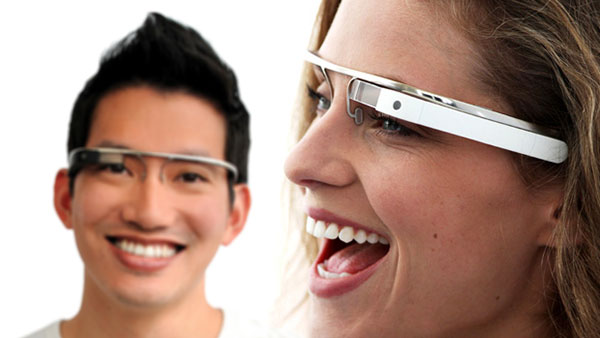

Tecnologia e Inovações
Sobre o Google Glass
Gustavo Guanabara
Atualizado em 23/Abril/2013
O que é
O Google Glass é um acessório em forma de óculos que possibilita a interação dos usuários com diversos conteúdos em realidade aumentada. Também chamado de Project Glass, o eletrônico é capaz de tirar fotos a partir de comandos de voz, enviar mensagens instantâneas e realizar videoconferências. Seu lançamento está previsto para 2014, e seu preço deve ser de US$ 1,5 mil. Atualmente o Google Glass encontra-se em fase de testes e já possui um vídeo totalmente gravado com o dispositivo. Além disso, a companhia de buscas registrou novas patentes antifurto e de desbloqueio de tela para o acessório.

Data de lançamento
Não há uma data específica e oficial para o dispositivo ser lançado, ainda. Pode ser que ele esteja disponível em demonstrações a partir de 2013, mas seu lançamento para as lojas fica para, pelo menos, 2014.
Especificações Técnicas
Técnica do Google Glass — Mar/2013
- Tela: resolução equivalente a uma tela de 25"
- Câmera: 5 MP para fotos / 720p para vídeos
- Conectividade: Wi-Fi e Bluetooth
- Memória interna: 12 GB
Como funciona
De acordo com fontes próximas do Google, os óculos vão contar com uma pequena tela de LCD ou AMOLED na parte superior e em frente aos olhos do usuário. Com o uso de uma câmera e GPS, você pode se situar, assim como selecionar opções com o movimento da cabeça.
O que você pode fazer com o Google Glass
O vídeo de divulgação do Google mostra que você pode se transformar em uma espécie de “super-humano”, já que o aparelho pode indicar a quantos metros você está de seu destino, se o metrô está aberto ou fechado, mostrar o clima e a agenda, e até mesmo permitir que você marque encontros apenas com comandos de voz.
[Aqui entra um vídeo]